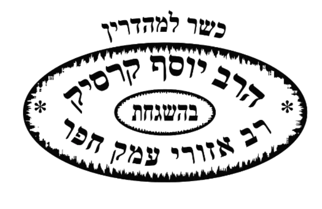
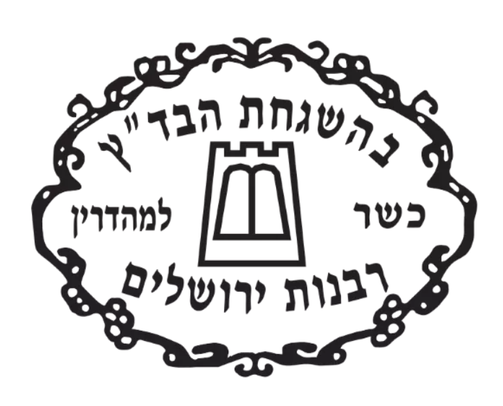
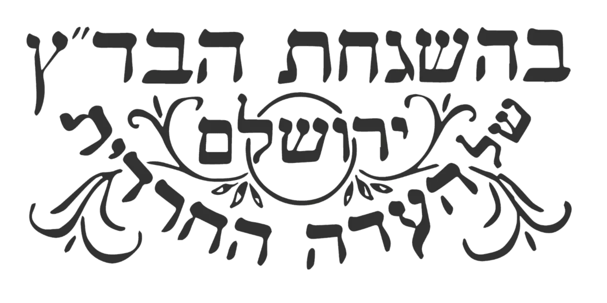
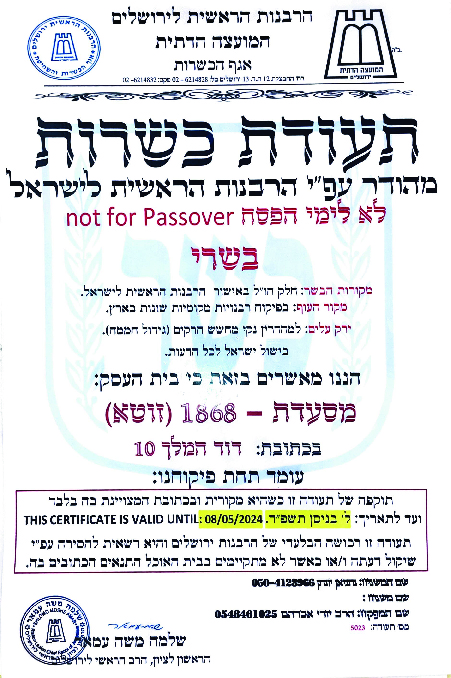
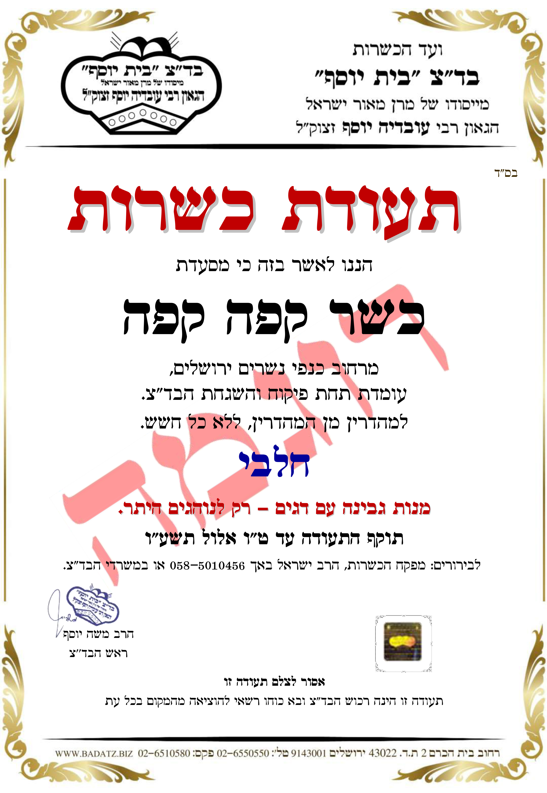

את מנגנון ההשגחה ראינו בשקפים הקודמים; התעודה התלויה על הקיר היא
העדות המרוכזת שהמנגנון פועל. אלא שהצרכן אינו יכול לבדוק בעצמו את
המטבח — ולכן עליו לדעת לקרוא את התעודה: מי מעניק אותה, לאיזו רמה,
ומה היא מכסה.
מה התעודה מעידה
תעודת הכשרות היא עדותו של גורם ניטרלי שכל שלמדנו — בישול ישראל,
מקור הבשר, כשרות היין, בדיקת הירקות והפרדת בשר מחלב — נשמר במקום.
במוצר ארוז, החותמת מעידה על כשרות המזון שבתוך האריזה, וכל עוד
האריזה המקורית סגורה וחתומה כפי שיצאה מן המפעל — המזון בחזקת כשר.
אריזה מקורית שקשה לזייפהּ נחשבת כשני חותמות.
| — |
כשר (רגיל) |
מהדרין |
| הכרעה במחלוקת |
בעת הצורך פוסקים כמיקל באיסור דרבנן |
חוששים אף לדעת המחמירים, גם כשהם מיעוט |
| פיקוח המשגיח |
ביקורות לפרקים ("יוצא ונכנס"); אמון רב יותר בבעל העסק |
משגיח צמוד ברוב שעות הפעילות |
| בישולי נכרים |
די בהדלקת האש בידי ישראל (כמנהג אשכנז) |
השתתפות ישראל בבישול עצמו (גם כשיטת הספרדים) |
| בשר |
גם בשר שאינו "חלק" |
בשר "חלק" בלבד |
| ירקות עלים |
סומכים על גידול המפוקח מחרקים |
מחמירים בבדיקה אף בגידול מפוקח |
מדרגות בהידור — ומדוע יש בד"צים רבים
אין הכשר יחיד המקיים את כל החומרות כאחת, שכן חלקן כרוכות בעלות
גבוהה שאף המהדרים אינם עומדים בה. משעלו לארץ קהילות מגלויות שונות,
כל גוף כשרות מכריע לפי מסורתו בנושאים כבישולי נכרים, שמיטה (היתר
המכירה) וחומרות הפסח — ומכאן ריבוי הבד"צים ומדרגות ההידור.
חותמות של גופי כשרות מוכרים — לפי שתי המשפחות שראינו:
רבנות מקומית ואזורית
הרבנות הראשית — הסמל הרשמי
כשר למהדרין

רבנות אזורית עמק חפר
כשר למהדרין

בד״ץ מהדרין — רבנות ירושלים
כשר למהדרין
בד״צים פרטיים (מהדרין)

בד״ץ העדה החרדית
ירושלים · אשכנזי
בד״ץ בית יוסף
ספרדי · מיסודו של הרב עובדיה יוסף
בד״ץ אגודת ישראל
מהדרין
בד״ץ חתם סופר
בני ברק · כשר למהדרין
חוג חתם סופר
פתח תקווה · למהדרין מן המהדרין
בד״ץ הרב לנדא
רבני העיר בני ברק
בד״ץ מהדרין — הרב רובין
מהדרין
הדרכת הרב מלמד בבחירת ההכשר
מידת ההידור הנדרשת היא עניין שכל אחד מברר עם רבו. ככלל, ראוי
להעדיף גוף כשרות המכבד את הדעות החולקות עליו על פני גוף המזלזל
במתחריו — שהזלזול אינו מידה של יראת שמים.
מפעל, מסעדה ואירוע — לא הכול שווה
במפעל ההשגחה קלה יחסית: אפשר לבדוק את הרכיבים מראש ולאשר תהליך
קבוע, ולכן אף כשרות רגילה מגיעה בו לרמת פיקוח גבוהה. במטבח שבו
מתבשל אוכל טרי — מסעדה, אולם או קייטרינג — המלאכה מורכבת יותר
ותלויה בצמידות המשגיח. באירוע גדול שבו ההשגחה אינה רצופה, ראוי
למזמינים להיפגש עם המשגיח ולוודא מפיו על מה בדיוק חלה השגחתו.
מה לבדוק בתעודה — למעשה
תוקף ותאריך: שהתעודה מקורית, תלויה במקום ובתוקף —
ולא צילום ישן.
הגוף ורמתו: מיהו המכשיר — רבנות מקומית, מהדרין או
בד"ץ — שהרמה קובעת על מה הקפידו.
היקף הכיסוי: מה התעודה כוללת — המטבח בלבד, או גם
אירועים וקייטרינג הנשלחים החוצה.
במוצר ארוז: שהחותמת מוטבעת על האריזה המקורית
הסגורה, לא רק על העטיפה החיצונית.
שתי תעודות אמיתיות להדגמה — כך נראים מרכיבי הבדיקה בפועל:

רבנות ירושלים (מהודר) — בשרי
-
הגוף ורמתו: הרבנות הראשית לירושלים, אגף
הכשרות — ברמת "מהודר".
-
סוג: בשרי; בשר חלק ובישול ישראל לכל הדעות.
-
היקף מוגבל: "לא לימי הפסח" — התעודה אינה חלה
בפסח.
-
העסק: שם וכתובת מפורשים (מסעדת "1868", דוד
המלך 10).
-
תוקף: תאריך מפורש — בתוקף עד ל׳ בניסן תשפ״ד
(08/05/2024).
- חתימה: הראשון לציון הרב שלמה משה עמאר.

בד״ץ בית יוסף — חלבי
-
הגוף ורמתו: בד״ץ "בית יוסף" (ספרדי) —
"למהדרין מן המהדרין, ללא כל חשש".
- סוג: חלבי.
-
העסק: שם וכתובת ("קפה קפה", כנפי נשרים
ירושלים).
-
הערת תפריט: "מנות גבינה עם דגים — רק לנוהגים
היתר".
-
תוקף: עד ט״ו אלול תשע״ו, וטלפון מפקח
לבירורים.
- חתימה: הרב משה יוסף, ראש הבד״ץ.
בישראל בימינו — רפורמת הכשרות ומעמדה
עד לפני שנים מעטות העניקה הרבנות המקומית כשרות בתחומהּ בלבד.
רפורמת הכשרות (תשפ"ב–תשפ"ג) נועדה לפתוח את השוק: לאפשר למועצות
דתיות להשגיח בכל הארץ, ולגופי כשרות פרטיים מאושרים לפעול, כשהרבנות
הראשית משמשת רגולטור הקובע תקן ומפקח על העומדים בו. מכאן החשיבות
להכיר את שם הגוף המכשיר ואת מהימנותו, ולא להסתפק במילה "כשר" לבדה.
הערה (עדכני לתשפ"ו, 2026): מעמד הרפורמה שנוי
במחלוקת ונתון בהליכי חקיקה. בפועל היא כמעט לא יושמה, והצעת חוק
לביטולה ולהשבת הסמכות הבלעדית לרבנות הראשית ולרבנים המקומיים עברה
בכנסת בקריאה ראשונה. יש לבדוק את המצב העדכני בעת השימוש במצגת.
📖 מקורות
עבודה זרה ל"ט ע"א–ע"ב · רמב"ם הלכות מאכלות אסורות י"ג, י · שולחן
ערוך יורה דעה קי"ח (חותם ושני חותמות); קי"ט (נאמנות) · פניני הלכה
כשרות לח, ג–ז · ילקוט יוסף · רפורמת הכשרות (תיקון חוק איסור הונאה
בכשרות), תשפ"ב–תשפ"ג.